Original Stitch artwork; technical extraction and native-size adaptation.
51 native 2D candidates and 49 reference rasters. Neutral citizens only; no animation or active-game replacement. Reference rasters are not 3D meshes. Transparent checkerboards exist only in this review page, not in PNG pixels.
Manifest | Source crops | Audit | Download pack
Characters: 64px, foot anchor (32,60). Icons: 24px. Props: 32px. Terrain: 32px; repeat samples use the same native tile. Equal border pixels do not replace visual seam review.
Native sheet | 3x sheet
64 x 64px | static_runtime_candidate
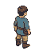
PNG | Cutout | Stitch source
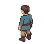
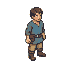
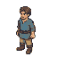
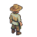
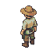
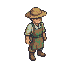
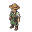
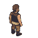
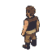
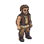
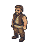
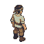
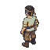
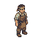
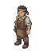
24 x 24px | static_runtime_candidate
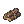
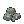
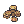
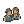
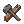
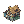
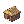
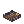
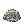
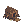
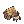
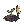
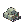
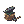
32 x 32px | static_runtime_candidate
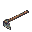
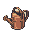
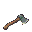
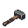
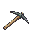
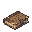
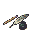
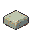
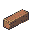
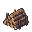
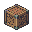
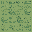
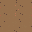
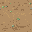
32 x 32px | static_grid_extension_candidate
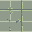
256 x 256px | reference_only_not_a_3d_mesh
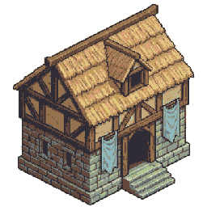
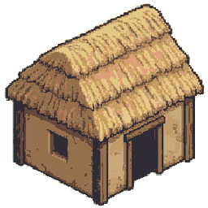
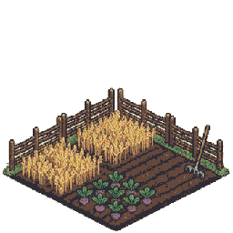
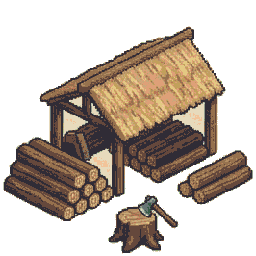
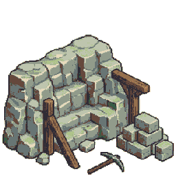
128 x 128px | reference_only_pending_3d_adaptation
128 x 128px | reference_only_not_a_3d_mesh
256 x 256px | inactive_catalog_reference_only